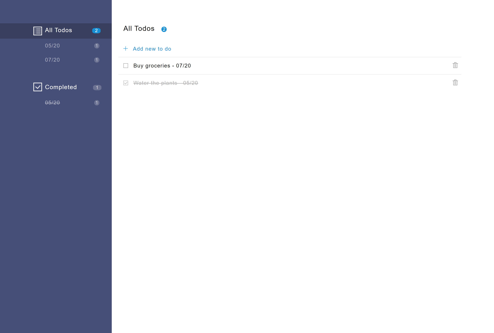

Cody Stair
I'm a full-stack Software Engineer based in Knoxville, Tennessee, with experience in Ruby, JavaScript/Node.js, PostgreSQL, AWS, Rails, and React.
Most recently, I built Stagehand, a drop-in service for automatically deploying and managing review apps for frontend applications.
Stagehand is a drop-in service for automatically deploying and managing review apps for frontend applications.
Stagehand is a framework that automatically manages review apps for your application’s GitHub repository on your own cloud infrastructure. We use AWS, GitHub Actions, and some Stagehand client-side code to set-up, deploy, manage, and teardown review apps for your frontend application.
READ THE STAGEHAND CASE STUDYOther projects
-

Reaction
Trello-like collaboration board with back-end API built with Rails, and front-end UI built with React + Redux
-

Ticket Tracker
Project ticket-tracking app built with Rails. User-login, comments, tags, tickets, and projects.
-

Todos
To-dos tracker built with Node.js, Express.js, JavaScript, jQuery, Handlebars, HTML, and CSS.